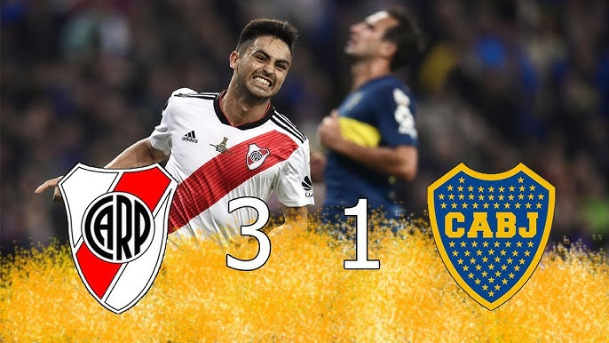
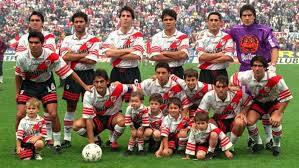
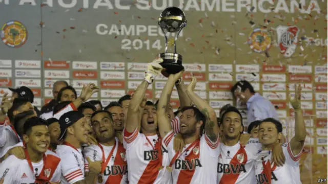

Hazañas Memorables de River Plate:Noches que Forjaron la Grandeza Un club marcado por gestas inolvidables
A lo largo de más de un siglo de historia, el Club Atlético River Plate ha protagonizado algunas de las hazañas más memorables del fútbol argentino, sudamericano y mundial. Partidos épicos, remontadas imposibles, títulos históricos y victorias eternas han construido una leyenda que trasciende generaciones. River no solo gana: marca época y escribe historia.
El Monumental como escenario de epopeyas
El Estadio Monumental ha sido testigo de innumerables noches gloriosas. Allí, River supo transformar la presión en motivación y la adversidad en hazaña.

River 8 - Wilstermann 0 (Copa Libertadores 2017)
Tras caer 3-0 en la ida en Bolivia, River logró una de las remontadas más impactantes de la historia de la Copa Libertadores. Con un fútbol demoledor, intensidad total y una actuación colectiva perfecta, el equipo dirigido por Marcelo Gallardo aplastó a Jorge Wilstermann por 8-0, clasificando a semifinales y dejando una huella imborrable en el continente.

Madrid 2018: la hazaña más grande de todas Final de la Copa Libertadores 2018 - River vs Boca Juniors
El 9 de diciembre de 2018, River Plate protagonizó la hazaña más importante de su historia y una de las más grandes del fútbol mundial. En el estadio Santiago Bernabéu, River venció 3-1 a Boca Juniors en tiempo suplementario y se consagró campeón de la Copa Libertadores. No fue solo un título: fue ganar la final más trascendental de todos los tiempos, ante el clásico rival, en un escenario único y bajo una presión histórica. Los goles de Pratto, Quintero y Martínez quedaron grabados para siempre en la memoria riverplatense.
El tricampeonato 1996-1997
Con Ramón Díaz como entrenador y figuras como Francescoli, Ortega, Gallardo, Crespo y Sorín, River logró un tricampeonato local histórico, acompañado por la obtención de la Copa Libertadores 1996. Fue una etapa de fútbol vistoso, resultados contundentes y una identidad que marcó a toda una generación.
Campeón del Mundo en 1986 Copa Intercontinental - River vs Steaua Bucarest
Luego de ganar la Libertadores de 1986, River se enfrentó al Steaua Bucarest en Tokio. Con goles de Antonio Alzamendi, el Millonario se impuso 1-0 y se consagró campeón del mundo, alcanzando la cima del fútbol internacional y llevando el nombre de River Plate a lo más alto del planeta.

La Sudamericana 2014 y el inicio de una era dorada
La Copa Sudamericana 2014 marcó el renacimiento internacional de River. Tras eliminar a Boca Juniors en semifinales y vencer a Atlético Nacional en la final, el equipo de Gallardo levantó un título que significó el comienzo de una etapa histórica. Desde ese momento, River se transformó en protagonista constante de todas las competencias internacionales, logrando múltiples títulos y hazañas en pocos años.
River Plate: un club de hazañas eternas
Cada generación de hinchas de River tiene su noche inolvidable, su partido épico, su momento eterno. Porque River no es solo historia: River es hazaña, emoción y grandeza.